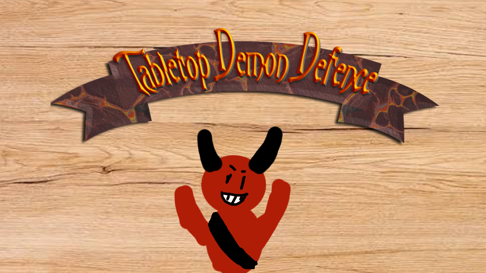
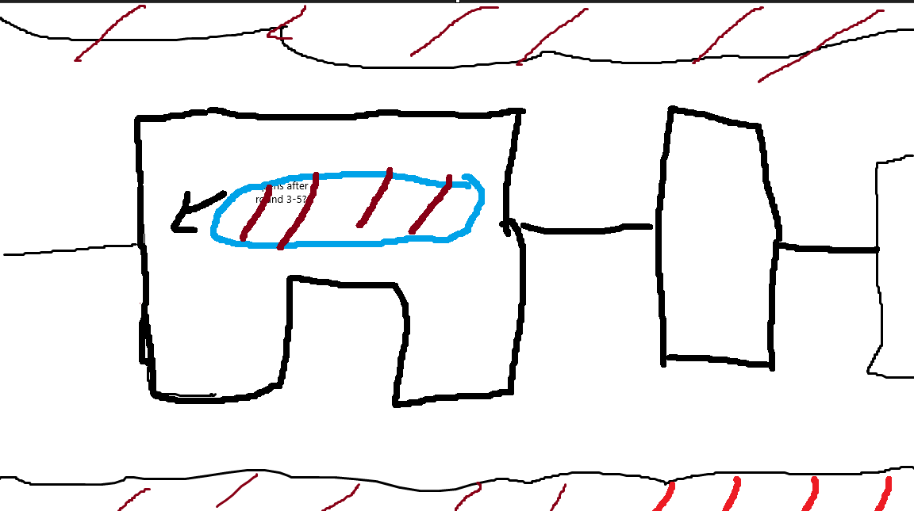
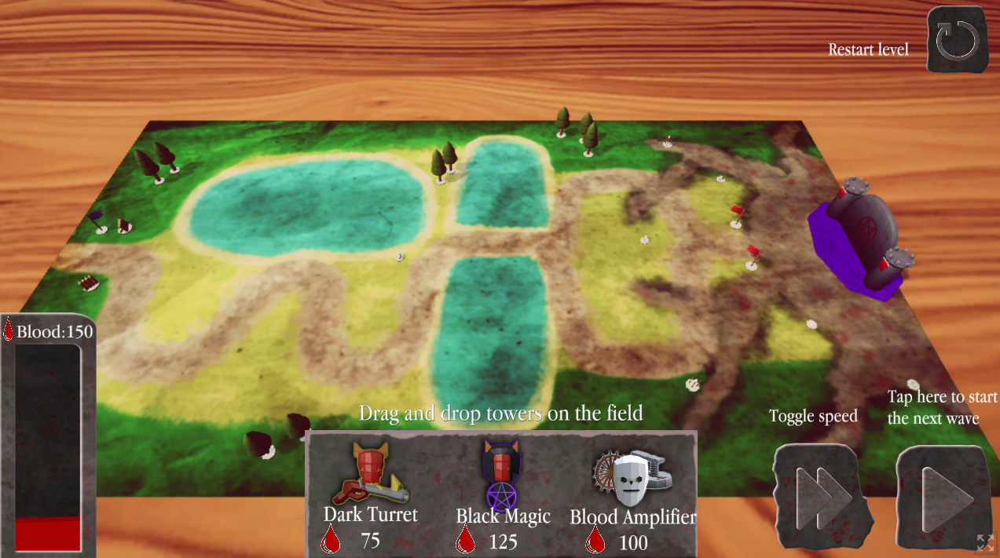
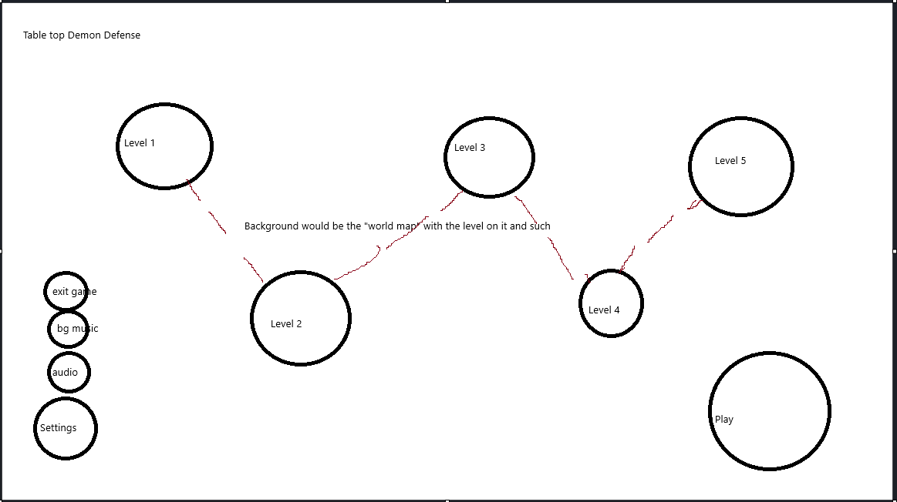
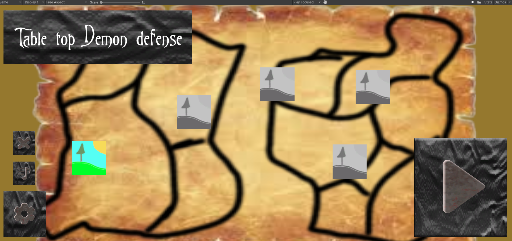

Video Game, Group project
Tabletop demon defender
A tower defense game made for mobile devices for a group project, the focus on this game was mostly focused on optimization and game balance making sure a simple mobile phone could run the game AND that it was enjoyable to play ofcourse

About the Project
Tabletop demon defender (or tdd) was a group project for school where we were tasked with making a game that could run on most mobile devices. For this reason we had to make sure our game was well optomized, that the UI / gameplay was playable and felt good on mobile and that the game was ofcourse still fun to play. As a group we decided to try and make a tower defense game from the "villains" perspective. Therefore we are playing from the demon's point of view instead of the humans.
My Contribution
- UI design
- Story design
- Gameplay design
- balancing
Project Details
Role
- Gameplay Designer
Engine
Unity
Team Size
6 People
Duration
3 weeks
Development Process
Below you can find some screenshots of the development process and what I did on them.
For this project the story did take a bit more of a backseat than with my others, however we still wanted it to be interesting and make sense. We chose to make it so you are playing from the demons POV to add a bit more of a unique aspect to game. We tried to spin the simple fantasy "demon king and hero" plot in a way to favour the demons a bit more to make sense why the demons would be defending themselves from the humans.
We also brainstormed different envoirments that could favour the player or enemies depending on what territory they were in. In the end we unfortunately did not have enough time to fully implement these so they stayed as concepts.
The gameplay compared to the story was a major part of the story where we invested a lot of time with idea's and perfecting those.
The towers were the biggest focus within this part. We wanted them to be fun, interesting and depending on the playstyle of the user Upgradeble. We brainstormed a total of 6 different towers, each with 2 different upgrade paths with 3 different levels. In the end the project contains a total of 3 of these towers each having 3 levels and 2 different paths, Worked out in the document below you can see the concepts and upgrade paths for those towers.
We also came up with some idea's for enemies and how they might be unique, and while implemented we only created a few simple ones (like the tank, runner.) + the Flying enemy which can only be attacked by ranged towers. We decided to focus on the towers which (because of the 3 week time limit) didn't leave our engineers with a lot of time to also start creating new unique enemies. Therefore they might be a little lacking but in the end it still worked out nicely as our towers came out good and as they were the main focus of the game.
see the enemy brainstoming document also below.
I was in charge of both the level design and UI, for both of which I had to make some simple concept art. Below you can find the concept art + the final implementation.



due to lack of time we were unable to implement this system in the final product.

Balance was a strong part of our development process. During and after development we spend quite a few days simply testing the game with our peers and adjusting variables to get a good feel and balance to the game with prototypes. For the first few iterations we noticed people could simply win with one tower (which obviosly wasn't the plan) after which we tweaked some numbers (costs, damage, enemy heatlh etc.) and we got the game in a decent position.
Ofcourse since the project only lasted 3 weeks and most of that time was actually creating prototypes, and developing the final product the balance is still not in a "perfect" place. However it has certainly improved from its prototype to the final product.
Final Result
In the end this project greatly helped me with gaining experience playtesting and balancing my game, discussing idea's with both artists and engineers, creating simple concept art + UI and experience working on a mobile game and the challanges that come with that (performance, User interface / interaction, file size, etc.)